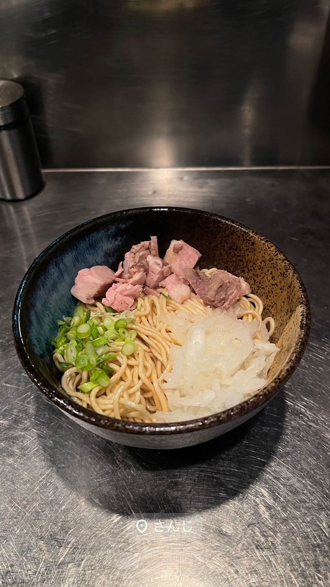
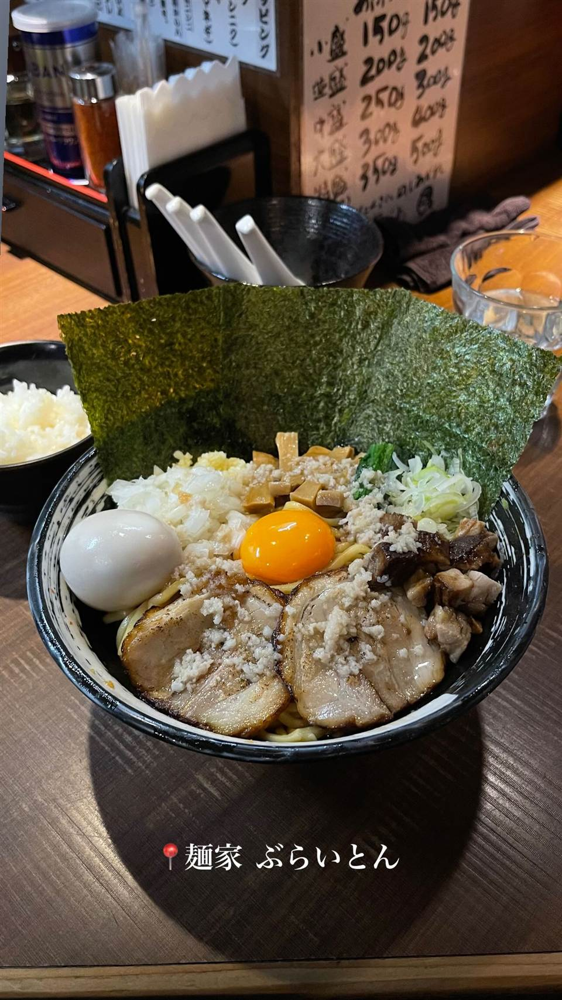

ラーメン · まぜそば・油そば · 上野
★ また行きたいまぜそば・油そばで6位
さんじ
豪州でお好み焼き店を営んだ店主の自家焙煎煮干しラーメン
さんじ
稲荷町「さんじ」は、オーストラリア・シドニーでお好み焼き店を営んだ後、現地の人気ラーメン店で修業した店主が開いた煮干しラーメンの店。自家焙煎した煮干しを効かせた濃厚スープと、まぜそば風にも楽しめる「和え玉」が名物。

TRIVIA
豆知識
- 店主はオーストラリアでお好み焼き店を営んだ後、現地でラーメンを学んだという異色の経歴を持つ
REVIEWS
世間の評判
95.5ラーメンDB3.71食べログ
濃厚煮干しとたわやか麺の一体感
- 濃厚な煮干しスープと鶏白湯のようなクリーミーさの融合を評価する声が多い
- 開化楼特注のたわやか麺のパキパキとした食感を評価する人もいる
- 雲丹を使った限定メニューなど創作系の一杯にも注目が集まっている
ラーメンデータベース 総合266位・最新 2026-09
| 系譜 | 店主はオーストラリア・シドニーでお好み焼き店を営んだのち、現地の人気ラーメン店で修業。帰国後、逆輸入的な形で東上野に開業し、2017年1月に煮干しラーメン専門店へ業態を変更。 |
|---|---|
| 看板 | 自家焙煎濃厚煮干ラーメン、まぜそば |
| こだわり | 煮干しを自家焙煎してスープや香味油に使用。「和え玉」は調味油・タレ・薬味を絡めた替え玉で、油そば風にもスープ割りにも楽しめる。 |
| どこから | 都心 |
| 営業時間 | 月・火 11:00-15:00、17:30-20:30 水 11:00-15:00 木・金 11:00-15:00、17:30-20:30 土 11:00-15:00 日 休み |
| 予算 | 昼 ～¥999 夜 ¥1,000～¥1,999 |
| 定休日 | 日曜 |
| 場所 | 稲荷町 東京都台東区東上野3-25-12 |
| メモ | 水曜・土曜・祝日は昼営業のみ、日曜定休。 |
食べたもの：ラーメン / まぜそば
NEARBY
近い店・同じ系統の店
-
 ★
まぜそば・油そば 本郷三丁目
中華蕎麦にし乃
メニューは2種類のみ、生姜香る肉厚ワンタン入りの中華そば
昼 ¥1,000～¥1,999 夜 ¥1,000～¥1,999
★
まぜそば・油そば 本郷三丁目
中華蕎麦にし乃
メニューは2種類のみ、生姜香る肉厚ワンタン入りの中華そば
昼 ¥1,000～¥1,999 夜 ¥1,000～¥1,999
-
 ★
まぜそば・油そば 亀戸駅
しののめヌードル
淡海地鶏と干し椎茸出汁、手もみ自家製麺の油そば
昼 ¥1,000～¥1,999 夜 ¥1,000～¥1,999
★
まぜそば・油そば 亀戸駅
しののめヌードル
淡海地鶏と干し椎茸出汁、手もみ自家製麺の油そば
昼 ¥1,000～¥1,999 夜 ¥1,000～¥1,999
-
 ★
まぜそば・油そば 亀戸
DURAMENTEI（ドゥラメンテイ）
白醤油と黒醤油、選べる2種スープと自家製ワンタン
昼 ¥1,000～¥1,999 夜 ¥1,000～¥1,999
★
まぜそば・油そば 亀戸
DURAMENTEI（ドゥラメンテイ）
白醤油と黒醤油、選べる2種スープと自家製ワンタン
昼 ¥1,000～¥1,999 夜 ¥1,000～¥1,999
-
 ★
まぜそば・油そば 東中神
自家製麺 まさき
水の綺麗な昭島を選んで出した二郎系の汁なしまぜそば
昼 ～¥999 夜 ～¥999
★
まぜそば・油そば 東中神
自家製麺 まさき
水の綺麗な昭島を選んで出した二郎系の汁なしまぜそば
昼 ～¥999 夜 ～¥999
-
 ★
まぜそば・油そば 武蔵境駅
珍々亭（珍珍亭）
1957年創業で油そば発祥の一店とされ、先代考案の拌麺ヒントのレシピが残る
昼 ～¥999 夜 ～¥999
★
まぜそば・油そば 武蔵境駅
珍々亭（珍珍亭）
1957年創業で油そば発祥の一店とされ、先代考案の拌麺ヒントのレシピが残る
昼 ～¥999 夜 ～¥999
-

★ まぜそば・油そば 旗の台駅 麺家 ぶらいとん 「無頼豚」の当て字を持つ、行列必至の油そばが看板 昼 ¥1,000～¥1,999 夜 ¥1,000～¥1,999